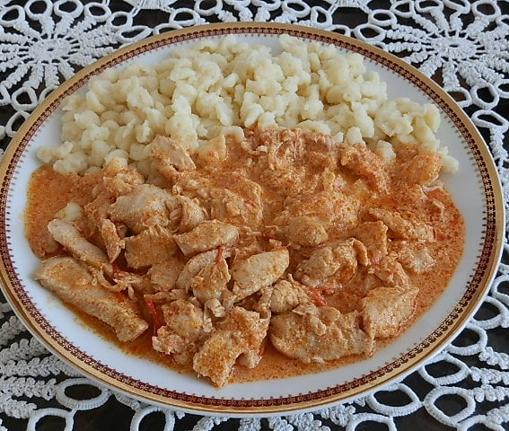

Kurací paprikáš podľa @oblubenerecepty — Normy Jedál
🥐 Kurací paprikáš 🥐
Dnes úplna klasika, ktorá neomrzí. Nasýti a chutí celej rodine. Ako príloha vhodné domáce halušky.
💥 Ingrediencie
1 kg kuracích pŕs, 250 g cibuľa, 50 g bravčová masť, 1 PL mletej sladkej papriky, 1 ks paprika čerstvá, 1 PL paradajkový pretlak, 200 ml smotany kyslej, 200 ml smotany na varenie, soľ
💥 Postup
Na masti orestujeme nasekanú cibuľu, odstavíme z ohňa, pridáme sladkú papriku, premiešame a zalejeme malým množstvom vriacej vody. Cibuľu povaríme, znovu podlejeme vriacou vodou a necháme odpariť väčšiu časť tekutiny.
Do tohoto základu vložíme na kúsky nakrájané mäso a premiešame. Mäso osolíme, podlejeme malým množstvom vody, pridáme paradajkový pretlak a za občasného podlievania a miešania pod pokrievkou dusíme. Keď mäso začne mäknúť, pridáme na malé pásiky nakrájanú papriku, premiešame a ďalej dusíme, ale už nepodlievame.
Na smotanovú zálievky vymiešame smotany, pridáme za naberačku horúcej šťavy z paprikášu a premiešame. Z paprikášu necháme bez pokrievky odpariť väčšiu časť tekutiny, prilejeme smotanu a za stále miešania krátko povaríme. Podávame s haluškami.
💥 Na halušky potrebujeme :
Ingrediencie
400 g polohrubej múky, soľ, 4 vajcia, voda
💥 Postup
Do misy dáme múku a osolíme. Pridáme celé vajcia a trochu vody. Rozmiešame na hladké cesto a podľa potreby pridáme vodu. Musí mať takú hustotu, aby sa dalo pretlačiť cez haluškovač. Cesto pretlačíme do vriacej osolenej vody. Povaríme asi 3 minúty a precedíme. Hodí sa ako príloha k mäsu so šťavou.
.
.
.
#varimdoma #varimeslaskou
#viaccasunavarenie #obed #kuracina #kuracieprsia #kuracipaprikas #halusky #halušky #recepty #obed #foodblogers #dnesvarim #followme